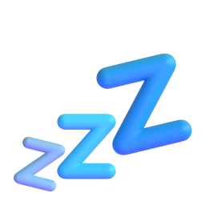
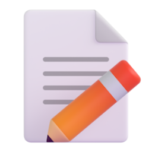

배포형과 세션형
배포형
담당 RomanSun
한 번 만들어 GitHub에 올려 두면 그다음은 알아서 돌아갑니다.
세션형
담당 낙관
매번 하던 설명(역할과 절차)을 파일에 적어 두면, 부를 때 따로 지시하지 않아도 에이전트가 끝까지 처리합니다.

배포형: 정해진 시각에 저절로

세션형: 내가 부를 때


배포형: 꺼져 있어도 됩니다
세션형: 켜져 있어야 합니다

배포형: 매번 같은 곳에서 가져옵니다매일 그 사이트 뉴스, 그 환율처럼

세션형: 내가 매번 다른 것을 맡깁니다이번 회의록, 이번 문의처럼

배포형: 카톡으로 도착

세션형: 노션 등으로 도착
헷갈릴 때는 이 질문 하나로 가릴 수 있습니다.
결과가 나오려면 도구를 켜야 합니까?
설문 첫 질문에서 내 트랙을 고르시면 되며, 아직 못 정하셨다면 "아직 못 정했어요"도 있습니다.
운영 방식 후보
운영진이 먼저 생각해 본 안 세 가지입니다. 이 중에서 꼭 고르지 않으셔도 됩니다. 더 좋은 방법이 떠오르면 설문에 편하게 적어 주세요!
어느 안이든 처음 30분(출석과 공지, 지난주 한 일 리뷰, 근황 토크)과 마지막 안내 10분은 다 같이 진행됩니다. 안마다 달라지는 건 그 사이 교육 시간뿐입니다.
1안나눠서 듣기약 70분
교육 시간에 Zoom 소회의실 두 곳으로 나뉘어 트랙별 교육이 동시에 진행되며, 끝나면 다시 한 방에 모여 마무리됩니다. 두 방 모두 녹화하고, 미팅이 끝나면 편집해서 공유드립니다!
- 좋은 점
- 미팅이 가장 짧고, 내 트랙 이야기에 집중할 수 있습니다.
- 알아둘 점
- 다른 트랙 교육은 녹화본으로 따로 시간을 내서 보셔야 합니다. 소회의실로 옮겨 갔다가 돌아오는 과정이 있습니다.
2안다 같이 차례로 듣기약 100분
5주차처럼 한 방에서 배포형 교육과 세션형 교육을 차례로 듣습니다.
- 좋은 점
- 다른 트랙 이야기도 함께 들을 수 있습니다.
- 알아둘 점
- 미팅이 가장 깁니다.
3안다 같이 핵심만 듣기약 80분
한 방에서 트랙별 핵심만 20분씩 듣고, 실제 화면 시연은 자료로 대신합니다.
- 좋은 점
- 두 트랙을 다 들으면서도 5주차보다 짧습니다.
- 알아둘 점
- 미팅 중에 실제 화면 시연을 보며 따라 하기는 어렵습니다.
의견 남기기
질문은 세 개입니다.
- 1안 나눠서 듣기약 70분
- 2안 다 같이 차례로 듣기약 100분
- 3안 다 같이 핵심만 듣기약 80분
- 다른 방법 제안직접 적기